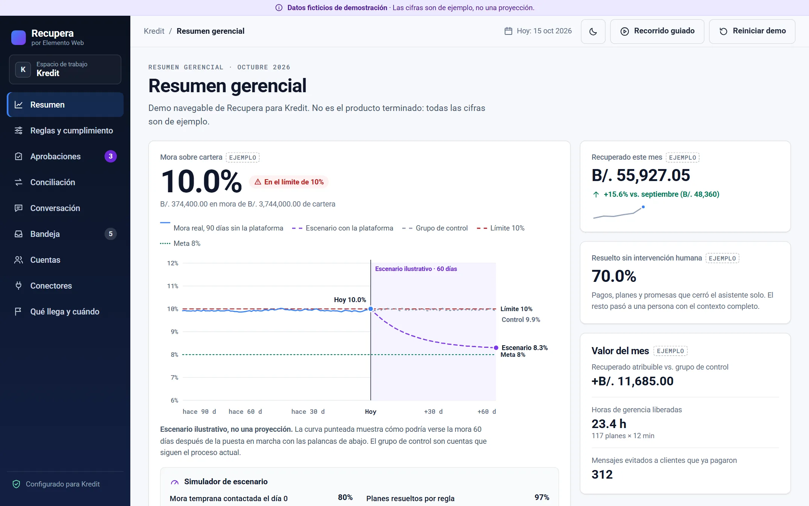
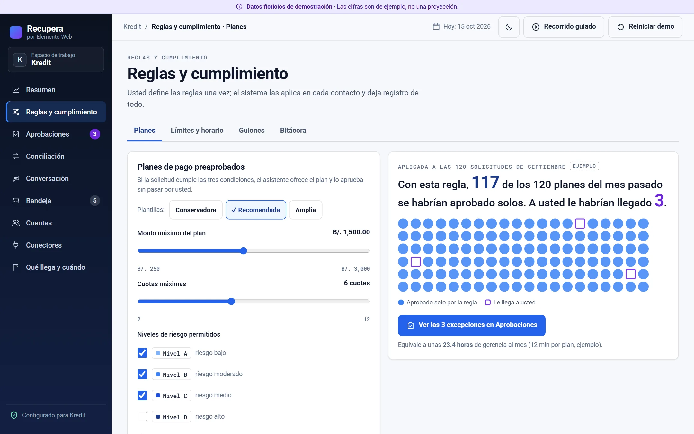

elementoweb.com
Desarrollo Web · IA · Automatización
KREDIT
Bajar la mora del límite, sin sumar personal
Una plataforma de cobranza con inteligencia artificial que contacta a cada cliente en el momento correcto, ofrece planes de pago dentro de sus reglas, concilia los pagos al instante y deja registro de cada contacto, listo para cualquier revisión del MICI.
Preparado para
Kredit · Gerencia General
CREDU HOLDINGS, S.A.
Ref. EW-KRE-2026-01 · válida hasta el 6 de noviembre de 2026
Recuperar más, con menos horas y con cada contacto registrado
Proponemos poner en marcha, en 8 a 14 semanas, una operación de cobranza automatizada sobre su cartera actual. La plataforma trabaja en tres capas: segmenta cada cuenta por riesgo con los datos del SIF y de AgileCheck, contacta de forma automática por SMS, correo y el portal de clientes según los días de mora, y llama con un agente de voz con IA a las cuentas en mora avanzada.
Antes de encender la IA resolvemos los dos frenos de hoy: los planes de pago que aprueba la Gerencia General uno por uno y la conciliación de pagos por correo. Sin eso, el sistema contactaría más rápido, pero cada caso seguiría esperando una aprobación o un registro manual.
10%
Mora actual, igual al límite
3
Capas: segmentar, contactar, llamar
8–14
Semanas hasta operar completo
100%
De los contactos con registro auditable
La mora ya está en el límite que permite la regulación
Según nos indicaron, la cartera en mora de Kredit está en el 10%, que es el tope regulatorio que les aplica. Eso cambia la naturaleza del proyecto: no se trata solo de cobrar mejor, sino de salir de la zona de riesgo regulatorio y mantener un margen de seguridad. Cualquier deterioro adicional de la cartera los pondría por encima del límite.
Dos frenos que hay que quitar primero
En la reunión identificamos dos cuellos de botella que hoy limitan cualquier esfuerzo de cobranza, con o sin IA. Por eso la fase 1 los resuelve antes de activar el agente de voz.
Un agente de voz que llama, negocia dentro de reglas y deja todo grabado
Hoy existen agentes de voz con IA que hacen llamadas de cobranza con voz natural en español. Se identifican como sistema automatizado, recuerdan el saldo, ofrecen planes de pago preaprobados y transfieren a una persona cuando detectan una disputa o un caso delicado. No reemplazan a su equipo: le quitan las llamadas repetitivas para que se concentre en los casos que de verdad necesitan criterio humano.
Escala
Cientos de llamadas al día
Consistencia
El mismo guion, siempre
Control
Una persona decide lo delicado
Una plataforma propia, conectada a sus sistemas
Es una plataforma de Elemento Web que operamos como servicio: Kredit no compra servidores ni licencias sueltas ni mantiene integraciones. Se conecta al SIF y a AgileCheck, usa sus canales oficiales y escribe de vuelta en el SIF los pagos, promesas y gestiones.
Conector de datos
Lee del SIF saldos, cuotas, días de mora e historial de pago, y de AgileCheck el score de cada cliente. Escribe de vuelta pagos, promesas y gestiones.
Motor de reglas
La Gerencia General define una vez qué planes se pueden ofrecer, a quién y con qué condiciones. Lo que entra en la regla se ofrece al instante; solo las excepciones le llegan a aprobar.
Conciliación de pagos
Recibe los pagos por link de pago o por el aviso o archivo del banco, los cruza con la cuenta y saca al cliente de la secuencia en minutos, no al día siguiente.
Bandeja de cobradores
Las disputas, los casos de riesgo y las excepciones llegan a su equipo con el historial completo de la cuenta y de cada contacto.
La cobranza no pasa por WhatsApp
La Política de Mensajería de WhatsApp Business prohíbe usar WhatsApp para cobrar deudas, y la prohibición aplica aunque la empresa tenga licencia. Una plataforma que cobre por WhatsApp arriesga el bloqueo del número y de la cuenta de Kredit en Meta.
Por eso los avisos salen por SMS y correo, el cliente conversa con el asistente por SMS o en el chat de su portal ("Accede a tu cuenta") y las cuentas en mora avanzada reciben llamada. El WhatsApp de Kredit queda libre para ventas y atención.
Véalo funcionando antes de decidir
Preparamos una maqueta navegable de la plataforma con datos ficticios de una cartera como la suya. Puede recorrerla por su cuenta: definir una regla y ver cuántos planes se aprobarían solos, simular un pago entrante, reproducir una conversación por SMS y una llamada, y exportar la bitácora.


elementoweb.com/demo/kredit · datos ficticios, nada se envía a clientes reales.
Cada cuenta recibe la intensidad que le corresponde
Aprovechamos el score de AgileCheck que ya usan, en vez de construir otro, y lo combinamos con el comportamiento de pago de cada cliente. Así el esfuerzo se concentra donde más se recupera.
| Criterio | Fuente | Uso en la segmentación |
|---|---|---|
| Días de mora | SIF | Define en qué etapa de la secuencia entra la cuenta. |
| Monto adeudado | SIF | Prioriza el esfuerzo hacia los montos altos. |
| Score de riesgo | AgileCheck | Ajusta la probabilidad de pago estimada. |
| Historial de pagos y promesas | SIF y plataforma | Distingue al cliente que se atrasa por descuido del que no tiene intención de pagar. |
| Canal que responde | Plataforma | Prioriza el canal en el que ese cliente suele contestar. |
| Disputas o reclamos abiertos | SIF o atención al cliente | Saca la cuenta de la automatización y la asigna a una persona. |
| Nivel | Perfil | Tratamiento |
|---|---|---|
| A · Bajo | Buen historial, atraso corto | Recordatorios amables por SMS y correo; sin llamadas. |
| B · Medio | Atrasos ocasionales | Secuencia completa por mensajes; llamada con IA desde el día 10. |
| C · Alto | Atrasos repetidos o score bajo | Llamada con IA más temprana y oferta de plan preaprobado. |
| D · Crítico | Monto alto, mora avanzada o promesas incumplidas | Cobrador humano desde el inicio, con apoyo de la plataforma. |
Cuatro niveles como punto de partida, con reglas simples y explicables. Los cortes se calibran con su cartera real en la fase 2.
El contacto correcto, el día correcto, por el canal correcto
Cada cuenta avanza por una secuencia según sus días de mora. Todo ocurre de forma automática, dentro del horario y de los límites de contacto permitidos.
Dos agentes que atienden, ofrecen y escalan
SMS y portal, desde el día 0
Agente conversacional
- Responde saldo, fecha de vencimiento e historial con datos reales del SIF. No inventa montos.
- Envía el link de pago y confirma cuando el pago entra.
- Ofrece planes dentro de las reglas preaprobadas y registra la promesa de pago.
- Detecta «ya pagué», «no es mío» o «quiero hablar con un abogado» y pasa el caso a una persona, deteniendo los mensajes.
Voz, desde el día 10–15
Agente de llamadas
- Llama desde un número local y se identifica como sistema automatizado de Kredit.
- Verifica la identidad antes de hablar de la deuda.
- Negocia solo dentro de las reglas y confirma el acuerdo por SMS y correo.
- Graba y transcribe cada llamada, y transfiere a un cobrador ante disputa o riesgo.
| Plataforma de voz | Fortaleza | Costo de referencia |
|---|---|---|
| Retell AI | Casos de cobranza ya probados e integración con sistemas de préstamos. | US$0.07–0.31 / min |
| Vapi | Más flexible para integrar reglas de cumplimiento propias. | US$0.05 / min + telefonía y voz |
| Bland AI | Modelo de voz propio y baja latencia. | Variable |
Elegimos la plataforma en la fase 1 con pruebas de voz en español de Panamá. El orquestador no depende de un solo proveedor: si uno sube de precio o baja de calidad, se cambia sin rehacer el sistema.
Diseñado para resistir una auditoría
En una entidad regulada, lo que importa no es solo cuánto se cobra, sino cómo. Cada regla se configura dentro de los límites que exigen la Dirección General de Empresas Financieras del MICI y la normativa de protección al consumidor, y queda documentada.
Límites de contacto
Máximo de intentos por cuenta, por día y por semana, y horario permitido. El sistema no puede pasarse aunque alguien lo intente.
Identificación
El agente, por voz, SMS o chat, se identifica siempre como sistema automatizado de Kredit al inicio.
Pausa y escalamiento
Ante una disputa, un reclamo, una mención legal o un pedido de no contacto, se detiene la automatización y el caso pasa a una persona.
Terceros
Nunca se habla de la deuda con alguien distinto al titular. La identidad se verifica antes de dar cualquier dato.
Bitácora auditable
Fecha, hora, canal, contenido, grabación y resultado de cada contacto. Se exporta para una auditoría o para responder un reclamo.
Datos personales
Tratamiento conforme a la Ley 81 de 2019 de protección de datos personales: acceso por roles, cifrado y datos que no se usan para entrenar modelos de IA.
Canales permitidos
Ningún aviso de cobranza sale por WhatsApp: su política lo prohíbe aun con licencia. SMS, correo, portal y voz, todos con registro en la bitácora.
Aprobación de guiones
Todos los mensajes y guiones de llamada los aprueba Kredit antes de salir, y cualquier cambio queda versionado.
La cobranza en tiempo real, en una sola pantalla
La Gerencia General ve en todo momento cuánto se recupera, por qué canal y si se cumplen los límites. Medimos la situación inicial en la fase 1 para que el resultado se pueda comparar con datos y no con impresiones.
| Métrica | Qué responde |
|---|---|
| Mora sobre cartera total | ¿Cuánto margen tenemos frente al límite regulatorio? |
| Recuperación por etapa y canal | ¿Qué mensaje, canal o llamada está funcionando? |
| Monto recuperado frente a mora | ¿Cuánto dinero devolvió el sistema este mes? |
| Promesas de pago cumplidas | ¿Los acuerdos que se cierran se pagan de verdad? |
| Paso de mora temprana a avanzada | ¿Estamos frenando el deterioro de la cartera? |
| Casos resueltos sin intervención humana | ¿Cuántas horas del equipo liberamos? |
| Tiempo hasta el primer contacto | ¿Qué tan rápido actuamos sobre una cuenta nueva en mora? |
| Casos escalados y motivo | ¿Cuántas disputas y casos de riesgo hay, y por qué? |
| Cumplimiento de límites | ¿Alguna cuenta recibió más contactos de los permitidos? Debe ser siempre cero. |
De 8 a 14 semanas, empezando por quitar los frenos
| Fase | Duración | Entregables | Criterio de salida |
|---|---|---|---|
| 1 · Descubrimiento y bases | 1–3 sem. | Acceso a datos del SIF y AgileCheck; reglas de planes preaprobados con la Gerencia General; conciliación automática de pagos; límites de cumplimiento confirmados; medición inicial. | Un pago se concilia solo y un plan dentro de regla se aprueba sin intervención |
| 2 · Segmentación y secuencia | 2–3 sem. | Niveles de riesgo calibrados; secuencia por SMS, correo y portal en n8n; remitente de SMS registrado y textos aprobados por Kredit; bitácora activa. | Cuentas reales reciben su secuencia y salen al pagar |
| 3 · Agente conversacional | 2–3 sem. | Agente en producción por SMS y en el chat del portal con consultas de saldo, links de pago, planes preaprobados y escalamiento a la bandeja. | Resuelve consultas simples sin persona y escala bien las disputas |
| 4 · Agente de voz | 2–4 sem. | Plataforma de voz elegida, número local, guiones aprobados, grabación y transcripción; salida gradual por volumen. | Llamadas activas en mora avanzada sin incumplir ningún límite |
| 5 · Dashboard y ajuste | 1–2 sem. | Panel en vivo, comparación con la medición inicial, ajuste de reglas, mensajes y horarios. | La Gerencia General sigue la cobranza desde el panel |
Implementación única y servicio mensual
La plataforma se cobra como servicio: una implementación inicial para conectarla a sus sistemas y a sus reglas, y una mensualidad que cubre la operación, el soporte y las mejoras continuas. El consumo de terceros se factura a costo, sin margen.
Implementación
Fases 1 a 5, de 8 a 14 semanas
Pago único · sin ITBMS
- Integración con SIF y AgileCheck
- Motor de reglas y conciliación
- Secuencia multicanal y agentes de IA
- Dashboard, capacitación y puesta en marcha
Plataforma de cobranza
Operación continua desde la puesta en marcha
/ mes · sin ITBMS
Recomendado: incluye la operación completa
- Alojamiento, seguridad y respaldos
- Hasta ___ cuentas gestionadas al mes
- Soporte y ajustes de reglas y guiones
- Mejoras continuas de la plataforma
- Informe mensual de resultados
Consumo de terceros
Facturado a costo, con el detalle del proveedor
Sin margen de Elemento Web
- Minutos del agente de voz y telefonía
- SMS (tarifa del operador) y correo transaccional
- Uso de modelos de IA
Resumen de Inversión
Pago único
Pagos mensuales
A Elemento Web
Consumo de terceros, a costo
Precio por definir: Kredit no tiene un presupuesto asignado para este proyecto. Lo fijamos con usted tras confirmar el tamaño de la cartera y el volumen de cuentas en mora.
Para arrancar · primer paso
Taller de reglas
Una sesión con la Gerencia General para definir los planes preaprobados y otra con sistemas para conectar el SIF. Con el tamaño de la cartera, fijamos el precio.
Precios en USD, sin ITBMS (7%); se aplicará según corresponda. El consumo de terceros se factura a costo, con el detalle del proveedor.
Lo que puede complicarlo y cómo lo evitamos
| Riesgo | Mitigación |
|---|---|
| El SIF no tiene una API o el acceso a los datos se demora | Plan B con base de datos de solo lectura o archivo diario; el plazo cuenta desde que tenemos acceso. |
| Las reglas de planes de pago no se definen y todo vuelve a la Gerencia General | Taller con la Gerencia General en la fase 1. El agente de voz no sale hasta tener las reglas. |
| Un mensaje o llamada fuera de tono afecta la marca o genera un reclamo | Guiones aprobados por Kredit, límites que no se pueden saltar, salida gradual y revisión de muestras grabadas. |
| Usar WhatsApp para cobrar y perder el número | La cobranza no pasa por WhatsApp: su política lo prohíbe aun con licencia. SMS, correo, portal y voz; el WhatsApp de Kredit queda para ventas y atención. |
| Costo de voz por encima de lo previsto | Llamadas solo a los niveles de riesgo que lo justifican, tope mensual de minutos y reporte de consumo. |
Lo que necesitamos de Kredit
Acceso a datos
Contacto en sistemas y forma de conexión con el SIF (API, base de solo lectura o archivo diario) y con AgileCheck.
Cartera
Número de cuentas activas y en mora por tramo de días, y monto total, para dimensionar el servicio y fijar el precio.
Reglas de planes
Una sesión de una hora con la Gerencia General para definir los planes de pago preaprobados.
Pagos
Bancos y medios de pago que usan sus clientes, y cómo les llega hoy el aviso de cada pago.
Cumplimiento
Su oficial de cumplimiento, para confirmar límites de contacto, horarios y textos obligatorios.
Canales
Remitente de SMS con un proveedor local, dominio de correo de Kredit y acceso al portal de clientes ("Accede a tu cuenta") para el chat.
Condiciones Comerciales
Pago de la implementación: por definir al firmar y el resto contra entrega de cada fase. Transferencia, ACH o Yappy.
Mensualidad: Empieza con la puesta en marcha de la fase 2. Plazo mínimo de __ meses.
Datos: Los datos de cartera, clientes y contactos son de Kredit. Se exportan completos cuando lo pida y se eliminan al terminar el servicio.
Plataforma: El software de la plataforma es de Elemento Web y se presta como servicio.
Confidencialidad: Acuerdo de confidencialidad y de tratamiento de datos firmado antes de recibir cualquier dato. Los datos no se usan para entrenar modelos de IA.
Disponibilidad y soporte: Soporte en horario laboral, atención prioritaria a incidentes que detengan la cobranza y respaldos diarios.
Alcance: El descrito en esta propuesta. Los cambios de alcance se cotizan aparte.
Validez: Esta propuesta vale hasta el 6 de noviembre de 2026. Precios en USD sin ITBMS (7%).
¿Empezamos por quitar los frenos? 🚀
Al aceptar, agendamos el taller de reglas con la Gerencia General y la sesión con sistemas para conectar el SIF. En dos semanas los pagos se concilian solos.
WhatsApp +507 6162-2787 · info@elementoweb.com